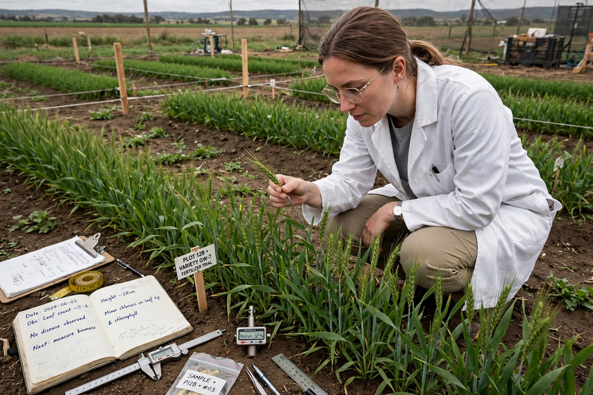

Agricultural science
Agricultural science (or agriscience) is a broad multidisciplinary field of biology that encompasses the parts of exact, natural, economic and social sciences that are used in the practice and understanding of agriculture. Professionals of the agricultural science are called agricultural scientists or agriculturists.

History
In the 18th and 19th centuries, early approaches to agricultural improvement were largely empirical. The work of Justus von Liebig on plant nutrition and mineral fertilisers placed the study of soil chemistry on a scientific footing. The establishment of experimental stations, such as Rothamsted in England (1843), institutionalised long-term field research. In the United States, the Morrill Land-Grant Acts of 1862 and 1890 created universities devoted in part to agricultural teaching and research.
The 20th century saw dramatic gains in productivity through plant breeding, mechanisation, synthetic fertilisers and pesticides. From the 1940s onward, the package of high-yielding varieties, irrigation and agrochemicals associated with Norman Borlaug became known as the Green Revolution, which greatly increased cereal production in Mexico, India and elsewhere.
Scope
Agricultural science includes:
- Agronomy – crop production and soil management
- Horticulture – the cultivation of fruits, vegetables and ornamental plants
- Animal science – the breeding, nutrition and care of livestock
- Soil science – the formation, classification and fertility of soils
- Plant pathology and entomology – diseases and insect pests of crops
- Agricultural economics – farm management and the economics of food systems
- Agricultural engineering – machinery, irrigation and drainage
- Food science – processing, preservation and safety of food
Modern developments
Recent developments include precision agriculture using GPS-guided machinery and satellite imagery, genetic engineering and genome editing of crops, and a renewed emphasis on sustainability, soil health and reduced chemical inputs. Research increasingly addresses the resilience of farming systems to climate change.